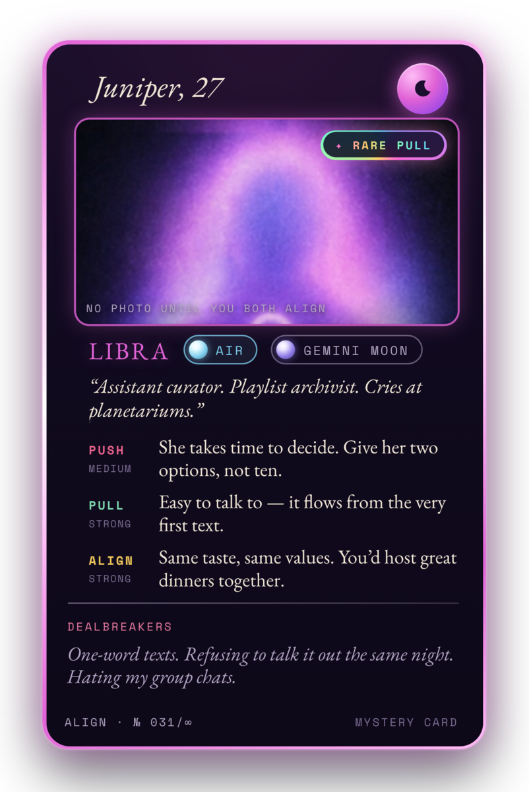
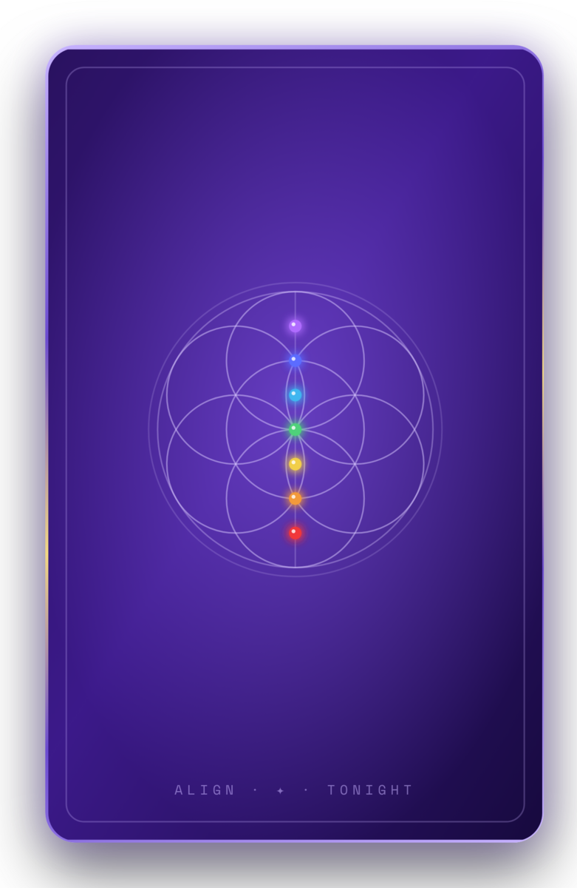

Align
Put your faith in the stars
Brand kit · 2026
Dating apps turned people into a feed. Everyone can feel it.
A face and a height decide before a word is said.
Chats fizzle. Ghosting is normal. Nobody owes anyone a reply.
There's a new stack tomorrow, so no one is worth the effort today.
Most dating apps earn the most when you almost find someone.
Align is a dating app where you meet who someone is before what they look like, both people have to choose each other, and every match is meant to end in a real, safe date.
To create, maintain, and promote alignment of people through technology, events, and real-life interaction.
Everybody has a story. We make sure theirs can be told.
Quality over quantity. Real conversations lead to real relationships.
Dating is vulnerable. We make safe spaces for it, online and in person.

A score treats people like a product, and pretends a number can decide for you.
Something two people choose together. It has to be mutual. The stars read; they never decide.
The card is how someone matters before they're seen.

A grainy nebula behind everything. Calm, never busy.
Always one moon, never two. It waxes as a story moves forward.
Four-point stars that twinkle, and shooting stars that cross the sky.
#100B21 · #281A4EEvery surface. Indigo, never black or grey.
#EDE6D8All text. Warm, never pure white.
Chrome gradientButtons and badges only.
Pink · Teal · GoldSmall accents. Gold is a glint, never a button.
Like a friend who reads your chart late at night. Short sentences. Honest, never harsh. Astrology is a way into a conversation, never a verdict.
A small hand of people, dealt every night. Quality, not quantity.
Someone's chart and words, with an aura for a photo.
Letting someone go cleanly. Never ghosting.
The moment both people align and faces are shown.
Real questions. Both answer before either sees.
Booked at a partner spot that knows it's a first date.
Align
Put your faith in the stars.